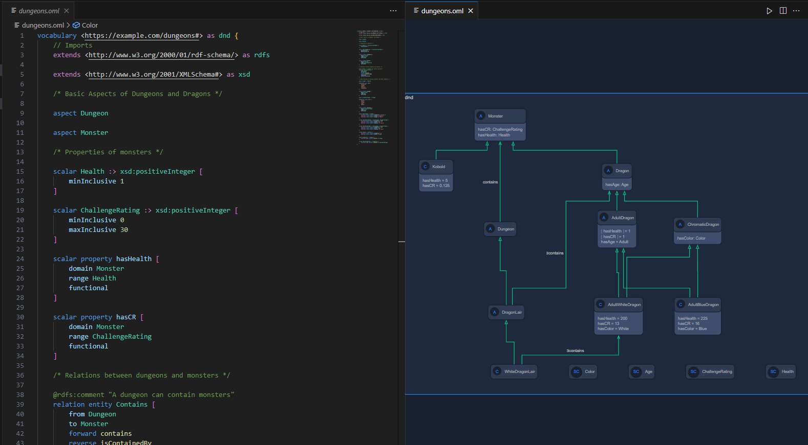

Contact Information
Email: tkhan314@ucla.edu, tomkhan27@gmail.com
Phone: 949-331-8960
LinkedIn: https://www.linkedin.com/in/tamjid-khan-6a2562177/
Github: https://github.com/TomKhan63
Resume
Skills
- C/C++
- Python
- Linux
- Arduino IDE
- React Native/Javascript
- Visual Studio Code Extensions
OML Alexandria
Visual Studio (VS) Code is a very popular environment for creating and editing code. It provides support for a variety of different languages through extensions. Ontological Modeling Language (OML) is a systems engineering language that is designed to model relationships between structures and objects similar to unified modeling language (UML). It was developed by a team of NASA engineers called openCAESAR.
OML Alexandria is a VSCode extension created by our UCLA project group for CS130 - Software Engineering: Team Ptolemy. Our group created an extension that uses Langium to provide language support for the OML language. This includes features such as syntax highlighting, code refactoring, code folding, goto definition, and many more. Furthermore, the extension provides a method to visualize the code using UML-like diagrams to show objects and their relationships
The above picture shows an example of an OML file being visualized as a diagram.
MediMate: Smart Pill Dispenser
For my Capstone Project in ECE183 - Robotic Systems, I worked in a group of 5 on a prototype for a robot called MediMate. The intuition behind the project was to create a robot that can scan pill bottles and store dosage information internally. Additionally, it would store the pills and automatically dispense them. Although our final prototype was unable to automatically dispense pills, it was able to scan and schedule pill dosages.
Overview of Design

Final System Design
The primary processing unit used in the prototype was a Raspberry Pi Zero W. This was because the libraries we planned to use Python scripts and Libraries for most of the software. Furthermore, we utilized the Raspberry Pi camera module ArduCam to easily take pictures that can be stored instantly on the Pi.